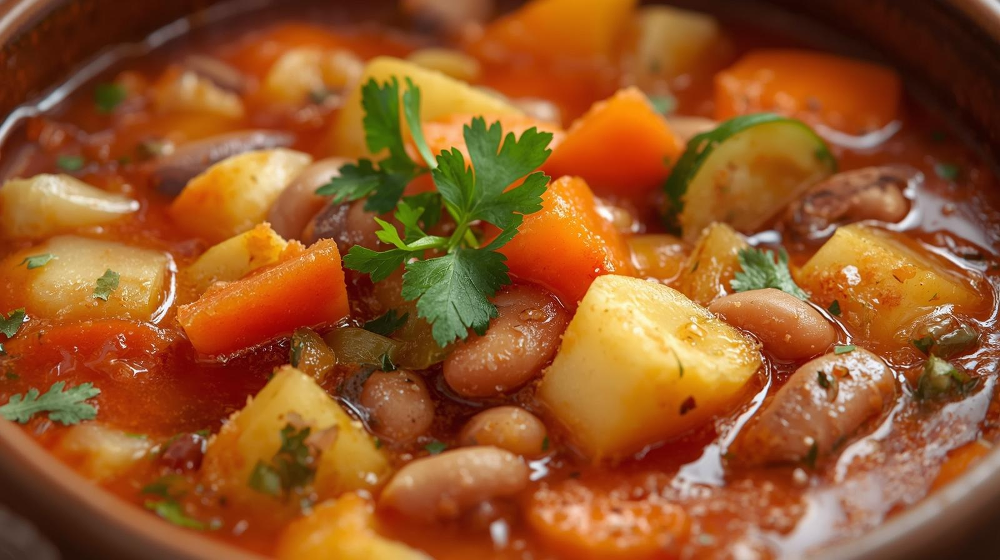

Minestrone

Description
Minestrone is a hearty vegetable soup that epitomises Italian cuisine. Packed with seasonal vegetables, it's a nutritious dish that warms the body. There are no strict rules about which vegetables to use, making it a great way to use up leftover vegetables from the fridge.
The tomato-based soup blends the rich flavours of various vegetables, creating a gentle taste enjoyed by children and adults alike. Adding pasta at the end or sprinkling on grated cheese makes it even more delicious.
Ingredients (serves 4)
- Onion: 1
- Carrot: 1
- Celery: 1/2 stalk
- Potato: 1
- Cabbage: 1/4 head
- Bacon: 50g
- Garlic: 1 clove
- Tinned whole tomatoes: 1 tin (400g)
- Water: 500ml
- Bouillon cube: 1 cube
- Olive oil: 1 tbsp
- Salt and pepper: to taste
- Optional: Short pasta 50g
- Optional: Parsley (finely chopped) to taste
- Optional: Grated cheese to taste
Steps
- Dice the onion, carrot, celery, potato, cabbage, bacon and garlic into 1cm cubes.
- Heat the olive oil and garlic in a pan over a low heat. Once fragrant, add the bacon and fry.
- Once the bacon is crispy, add the onion, carrot and celery and fry until softened.
- Add the potatoes and cabbage and stir-fry briefly.
- Add the whole tinned tomatoes, crushing them as you add them, along with the water and consommé cube. Bring to the boil.
- Skim off any scum and simmer over a low heat for 15-20 minutes. Once the vegetables are tender, season with salt and pepper.
- If adding short pasta, add it now and cook according to the packet instructions.
- Serve in bowls, garnished with parsley and grated cheese to taste.
Home